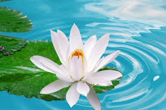

Flowers' importance in nature is everywhere—they can feed insects, birds, animals and humans; provide natural medicines for humans and some animals; and aid in a plant's reproduction by enticing outside pollinators. Without flowers, plants would merely be green, and the world would be a duller place.
